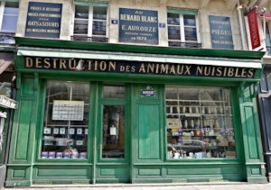

Sobre mim
Olá, meu nome é Karina, sou formada em turismo e tenho paixão por viagens, tecnologia e eventos. Minha jornada em busca de conhecer o mundo começou em 2010, época em que eu trabalhava em uma companhia aérea, no qual facilitou esse sonho.
A primeira viagem
A primeira viagem internacional foi em 2010, na época eu ganhava R$700,00 como estágiaria e poupei ao ponto de colocar agua no shampoo para render mais, assim em 1 ano, consegui o dinheiro para a viagem. Claro que por trabalhar em uma companhia aérea me ajudou e muito! Pois tinhamos como benefício a concessão de passagens, que nada mais é que um desconto em passagens aéreas de 90% a 100%. Ou seja, paguei na época, cerca de R$500,00 ida e volta para a Europa!!!Saudadessss...rs
Talvez por ter sido a primeira, essa foi a mais especial até hoje!
Paris
Paris é linda, romantica e tem um cheiro delicioso de nutella na torre Eiffel! Os moradores não são muito receptivos, principalmente se você, como eu, tentar se comunicar na língua inglesa. Mas se eles não quiserem te dar a informação que busca, não se apavore, tem varios visitantes que irão te ajudar, ou que estarão tão perdidos quanto você...rs Ótima oportunidade para fazer amizades com pessoas do mundo todo!
Ah e não dúvide se encontrar alguém conhecido próximo do quadro Monalisa no museu do Louvre. É o quadro mais visitado do mundo e acaba decepcionando muita gente, pois além de estar lotado o espaço, o quadro é pequeno. Ah e sim, encontramos até tios e primos ali!hahahaha
Você já assistiu Ratatoille? Lembra que o ratinho via uma vitrine cheia de ratos mortos? Pois é...é bem comum você ver ratos andando pelas ruas e essas lojas vendendo produtos para o extermínio deles.
Então é isso! Espero que você tenha gostado da minha breve história sobre viagens.